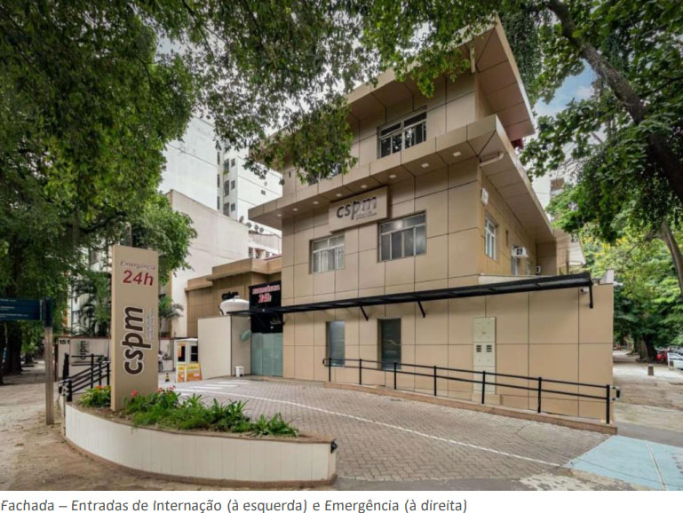
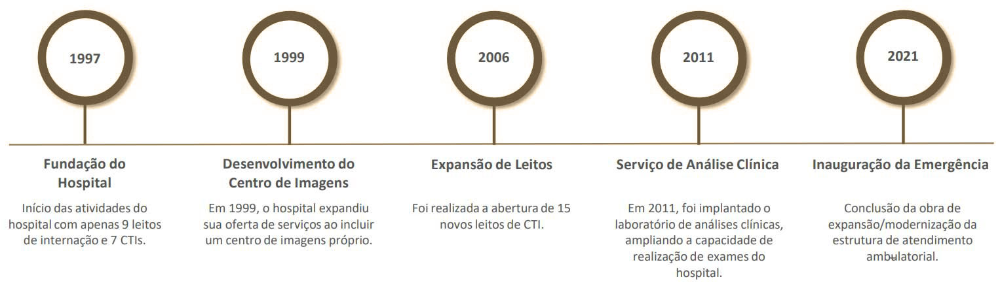
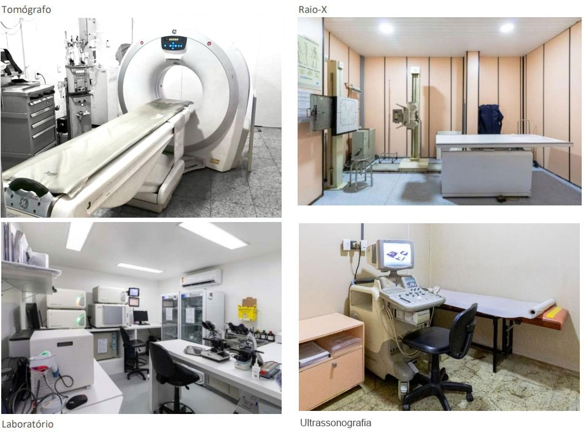
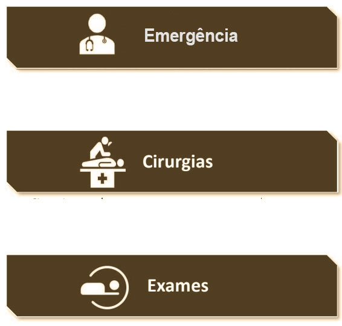

Missão
Promover assistência hospitalar de qualidade, inovadora, humanizada e sustentável, alicerçada na competência multidisciplinar.
Institucional
Conheça a história, a estrutura e os valores da Casa de Saúde Pinheiro Machado.
A Casa de Saúde Pinheiro Machado, localizada em Laranjeiras, na Zona Sul do Rio de Janeiro, foi fundada em 1997. Desde então, mantém infraestrutura própria para a realização de exames de imagem e análises clínicas, reunindo diagnóstico, tratamento e recuperação em um só endereço.
O hospital conta com 3 salas de cirurgia, que possibilitam a execução de procedimentos de baixa e média complexidade. Entre os procedimentos cirúrgicos realizados, destacam-se os traumatológicos, urológicos e as cirurgias bariátricas.

Nossa história

Estrutura
Ambientes projetados para conforto, segurança e agilidade no atendimento — da internação ao centro cirúrgico.


Tecnologia
Investimos em equipamentos de última geração para exames de imagem e apoio diagnóstico, com precisão e agilidade.


Nosso compromisso
Promover assistência hospitalar de qualidade, inovadora, humanizada e sustentável, alicerçada na competência multidisciplinar.
Ser reconhecido como um hospital de excelência, especializado no atendimento de alta complexidade.
Fale com nossa equipe e tire suas dúvidas sobre atendimento, exames e internação.